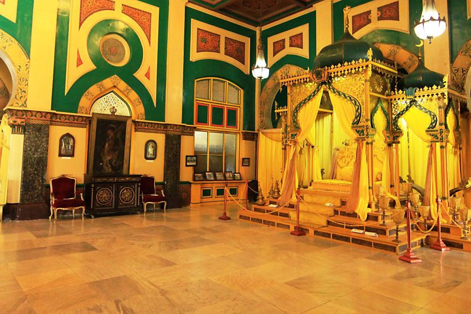

1. Ikon Kebudayaan Melayu
Istana Maimun berdiri megah di Kota Medan, Sumatera Utara, dan merupakan peninggalan dari Kesultanan Deli yang dibangun pada tahun 1888. Ciri khas paling mencolok dari cagar budaya ini adalah dominasi warna kuning emas, yang melambangkan warna kebesaran sekaligus warna adat masyarakat Melayu. Istana ini menjadi pusat sejarah dan saksi kejayaan Kesultanan Deli di masa lampau.

2. Akulturasi Arsitektur Multikultural
Yang membuat Istana Maimun sangat dikagumi adalah perpaduan gaya desain interiornya. Bentuk pintu dan jendela yang melengkung lebar mengadopsi gaya arsitektur Timur Tengah dan Islam. Sementara itu, pengaruh Eropa terlihat kuat pada furnitur, hiasan lampu kristal gantung, serta model pilar penyangga istana yang mirip dengan bangunan khas Spanyol dan Italia.
Pentingnya Pelestarian
Sebagai sebuah mahakarya arsitektur, Istana Maimun membuktikan bahwa bangsa Indonesia sejak dulu sangat terbuka dan mampu menyerap keberagaman budaya luar untuk menciptakan harmoni karya seni yang luar biasa indah.